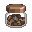

Lv
3
Apprentice
0/300 XP
✪
0
Saturday · Market Day
📍 Pacific Northwest, USA · November
🎮 In-game
🛒 In the store
🥕 Player is vegetarian:
Off
Pan & stalls: scripted
Old Wen
PROTEIN COUNTER
Big Bram
Okafor-Sato

Spices
Saturday. The market. Try not to buy a strawberry. It's November.
The Pan